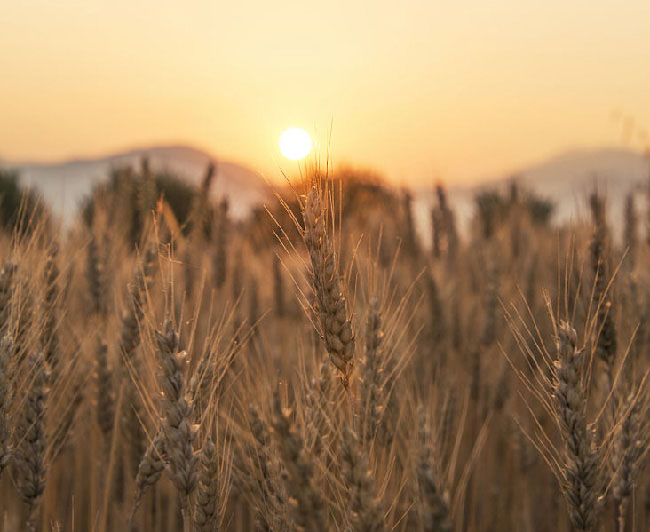

<template>
<div data-hf-id="hf-9rv4" id="s14" data-composition-id="s14" data-width="1920" data-height="1080" data-duration="5.101937500" style="position:relative;width:100%;height:100%">
<section data-hf-id="hf-u9eb" class="shot-surface statement theme-dark">
<div data-hf-id="hf-xtcz" class="ground-texture" aria-hidden="true" data-layout-ignore=""></div>
<header data-hf-id="hf-g11z" class="frame-header"><span data-hf-id="hf-hjzl"><i data-hf-id="hf-rv09" class="header-dot"></i>une histoire du pouvoir</span><span data-hf-id="hf-3ujm" class="header-right">03 / 09</span></header>
<div data-hf-id="hf-vp0s" class="kicker">03 — la richesse se stocke</div><div data-hf-id="hf-bdx3" class="copy"><div data-hf-id="hf-5i4w" class="heading-rule" aria-hidden="true"></div><h2 data-hf-id="hf-t43f" class="headline"><span data-hf-id="hf-l6l6" class="title-line">mesurable.</span><span data-hf-id="hf-h4n8" class="title-line">accumulable.</span><span data-hf-id="hf-4csh" class="title-line">volable.</span></h2></div><div data-hf-id="hf-4aao" class="photo-frame"><span data-hf-id="hf-7qec" class="image-index" aria-hidden="true" data-layout-ignore="">01</span></div><div data-hf-id="hf-t1cj" class="photo-caption">céréales · photographie contemporaine d’illustration · cc by 4.0</div>
<footer data-hf-id="hf-1dc7" class="frame-footer"><span data-hf-id="hf-ajp8">qui a inventé les rois ?</span><span data-hf-id="hf-pdzs" class="footer-page">14 / 44</span></footer>
</section>
</div>
<script>window.DocRuntime.mount("s14",{"duration": 5.101937500000005, "figure": null, "camera": "push", "list": true, "cta": false});</script>
</template>